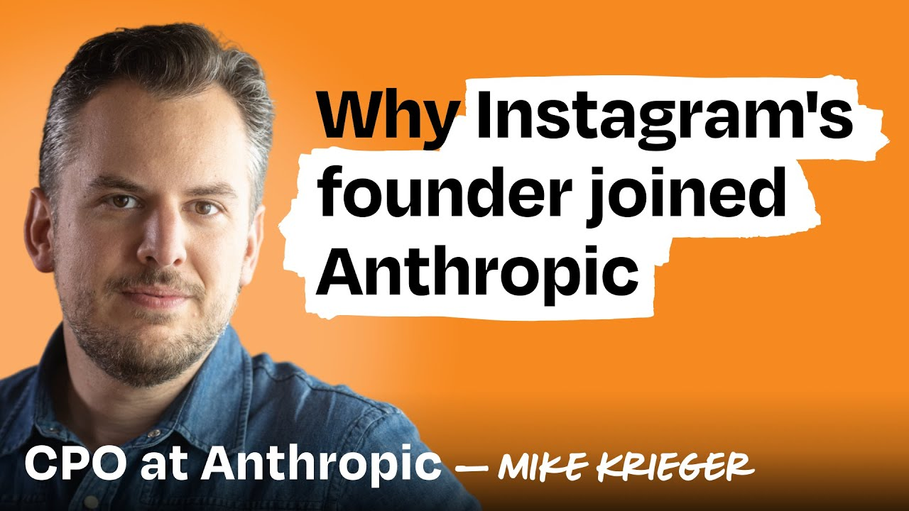
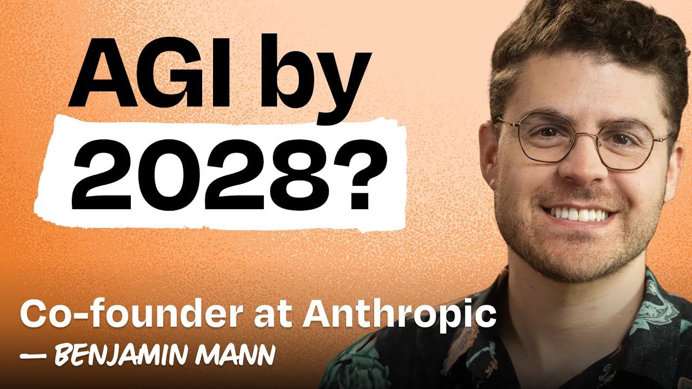
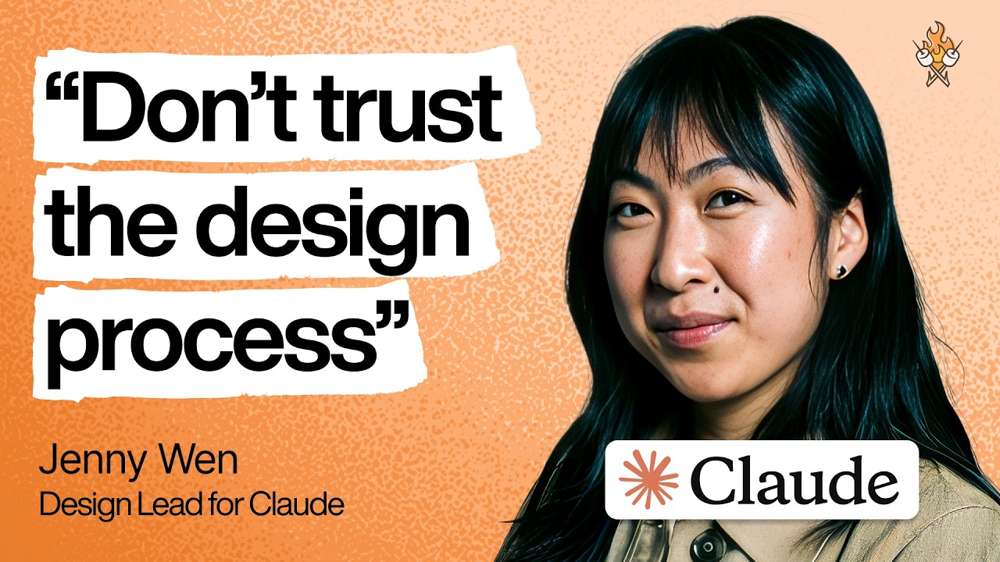
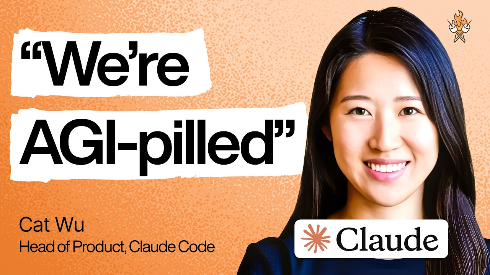
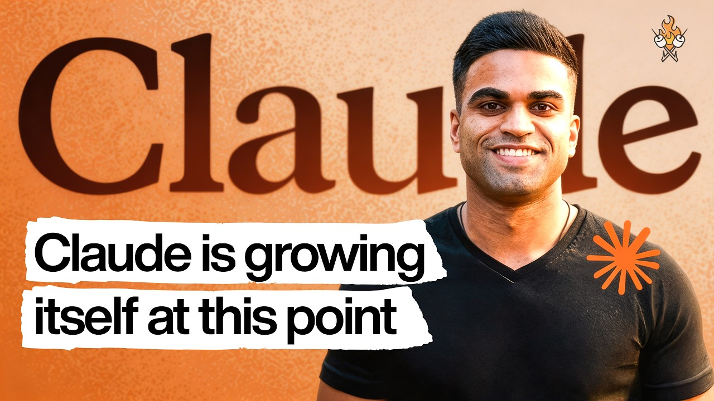

MK
Mike Krieger
Chief Product Officer (CPO)
Co-founder of Instagram. After leaving Meta, co-founded Artifact (AI-powered news app). Joined Anthropic to lead product in 2024.
Insights from six Anthropic leaders on culture, products, skills, growth, and recommended reading — drawn from their conversations with Lenny Rachitsky

Co-founder of Instagram. After leaving Meta, co-founded Artifact (AI-powered news app). Joined Anthropic to lead product in 2024.

One of the architects of GPT-3 at OpenAI. Left OpenAI with the safety team to co-found Anthropic.

Previously Principal Engineer at Meta for 5 years. Author of Programming TypeScript. Briefly left Anthropic for Cursor, returned after two weeks.

Previously Director of Design at Figma (led FigJam and Slides). Before that, designer at Dropbox, Square, and Shopify.

Leads product for Claude Code and Cowork alongside Boris Cherny. Previously an engineer for years, then briefly in VC before joining Anthropic.

Leads growth at Anthropic during the most unprecedented run in software history — $1B to $19B ARR in 14 months. Previously led growth at Mercury and MasterClass. Cold-emailed his way into the role when no listing existed.
Key themes that emerged across all four conversations about Anthropic's culture.
“If you ask anyone in the hallway why they’re here, the answer is always going to be safety.”
“Intellectual honesty and a shared view of what it means to do AI responsibly.”
The company was founded when the entire safety team left OpenAI because safety wasn’t being prioritized.
Mission alignment trumps financial incentives, helping retain talent despite $100M+ competitor offers.
Constitutional AI creates Claude’s beloved personality as a direct result of the safety focus.
“No roadmap for innovation. Give people space and psychological safety that it’s okay to fail. 80% of ideas being bad is okay.”
“Building trust through speed — continuously shipping and improving.”
Claude Cowork was built in just 10 days from internal prototype to external launch.
Give engineers unlimited tokens so they’re free to try crazy ideas.
“Everyone is fairly technical — even for non-technical functions. Designers largely code.”
90-95% of code is written by AI; 70%+ of pull requests are Claude-generated.
4× engineering team growth while productivity per engineer increased 200%.
The Claude Code team uses Claude Code to build Claude Code in a self-improving loop.
“The Anthropic Design team — really humble, doing great work, resilient, spanning from technical prototypers to high-craft specialists.”
“The best teams roast each other — psychological safety combined with high standards.”
Slack is a gold mine of ideas and prototypes.
“Very little grandiosity from the founders — they’re cleareyed about what they’re building.”
Be deeply curious, technically proficient, and willing to build with AI tools at the frontier. Every guest emphasized that the people who thrive at Anthropic are those who lean into new tools, think from first principles, and never stop learning.
“I’m a huge believer in the founding engineer / tech lead with an idea — pair them with design and product support. I’m 10 times more a believer in that than before.” Values curiosity, scientific thinking, and independent inquiry.
“Be ambitious in how you use AI tools. People who use new tools as if they were old tools tend to not succeed.” Teaches his kids: curiosity, creativity, self-led learning, and kindness. “Facts are going to fade into the background.”
“Everyone on the team codes — product managers, engineering managers, designers, finance, data scientists.” Seeks people who are “AI-native, curious, and generalists.” Emphasizes speed, common sense, and first-principles thinking.
Three hiring archetypes: (1) Strong Generalists (80th percentile in multiple skills), (2) Deep Specialists (top 10% in their area), (3) Craft New Grads (wise beyond years, humble, unburdened by old processes). Values resilience, adaptability, and excitement about frontier tech.
The products and capabilities the guests are most passionate about.
The most striking forecasts and frameworks from across all six conversations.
“I think 50th percentile chance of hitting some kind of superintelligence is now like 2028.” Ben believes AI progress is still accelerating — not plateauing — and most people badly misjudge the exponential curve.
Ben’s framework for measuring AGI: hire an AI agent and a human contractor for the same job for a month. If the manager prefers the AI at the end, it’s passed. Apply this to a market basket of 50% of economically valuable jobs, and you have transformative AI.
“If you just think about 20 years in the future where we’re way past the singularity, it’s hard for me to imagine that even capitalism will look at all like it looks today.” Ben sees a scary transition period ahead, with significant job displacement — especially in lower-skill roles.
“If we do our jobs, we will have safe aligned superintelligence — as Dario says in Machines of Love and Grace, a country of geniuses in a data center, and the ability to accelerate positive change in science, technology, education, mathematics. It’s going to be amazing.”
Boris believes coding as we know it is essentially solved. 100% of his code is AI-written since November. Claude Code grew to 4% of all public GitHub commits, with daily active users doubling monthly. The question now is: what comes after?
“Everything becomes an MCP endpoint — the entire digital world becomes scriptable and composable by AI agents.” Mike sees MCP as the fastest-growing standard in tech history, already adopted by Microsoft into Windows.
Cat describes how Anthropic’s shipping cadence has collapsed from months to weeks to days. The compounding effect of AI-assisted development means product teams that once shipped quarterly now ship within a single sprint — and the gap is widening between teams who’ve adapted and those who haven’t.
“95% automation isn’t good enough.” For agentic products that run long, multi-step workflows, the last 5% is where trust is won or lost. Cat argues PMs should build products that don’t yet fully work — so they’re ready when the next model closes the gap.
“The product value we will deliver in two years is probably 1,000x what it is today.” Amol argues that because model capability compounds exponentially, AI companies should stop optimizing A/B tests and start placing much bigger bets — the alpha is in the forest, not the trees.
“Internally, linear charts are just not cool. Everything is log-linear.” Anthropic went from $1B to $19B ARR in 14 months — adding $6B in February alone. When revenue is compounding on an exponential, even your dashboard defaults have to change.
Jenny Wen’s thesis on why traditional design workflows are becoming obsolete.
The classic design process — research first, personas, journey maps, problem statements, then solutions — no longer fits. AI is accelerating prototyping so fast that rigid processes are failing designers. Jenny argues for starting from solutions and trusting designer judgment.
At Anthropic, designers code. The design team spans from technical prototypers to high-craft specialists. Jenny’s hiring archetypes include Strong Generalists (80th percentile in multiple skills), Deep Specialists (top 10%), and Craft New Grads who are wise beyond their years.
Contrary to the hype that chatbot interfaces will be replaced, Jenny argues they may be more durable than most people expect. The conversational interface has staying power because it maps naturally to how humans communicate.
“The best teams roast each other — psychological safety combined with high standards.” In the AI era, taste and craft become the key differentiators. AI can generate options, but human judgment on what’s excellent is still irreplaceable.
Defining moments that shaped their paths to Anthropic.
Ben was one of the architects of GPT-3 at OpenAI. He left with the entire safety team because safety wasn’t being prioritized enough. That exodus became the founding story of Anthropic — a company built from day one on the principle that AI safety can’t be an afterthought.
After leaving Meta, Mike co-founded Artifact — an AI-powered news app he loved. But he made the hard call to shut it down. His lesson for founders: knowing when to let go of something you love is as important as knowing when to build. He then joined Anthropic to lead product.
Boris briefly left Anthropic for Cursor — and came back after just two weeks. The pull of building Claude Code and the mission-driven culture at Anthropic proved too strong. Claude Code itself started as a quick hack and grew into a product that now accounts for 4% of all public GitHub commits.
Jenny was Director of Design at Figma, leading the FigJam and Slides teams. She voluntarily stepped down from a director role to return to individual contributor work at Anthropic. The reason: a front-row seat to the most transformative technology of our time was worth more than a title.
Cat and Boris run Claude Code as an 80/20 partnership: Boris is the tech lead and visionary setting the 3-6 month direction, while Cat drives the path to get there and leads cross-functional execution. It’s a model of how modern AI product teams blur the PM-engineer boundary.
Competitive playbooks and principles for building in the age of AI giants.
For AI startups worried about getting crushed by OpenAI, Anthropic, or Google, Mike identifies three moats: (1) Deep domain expertise (like Harvey in legal), (2) Differentiated go-to-market with specific customer knowledge, and (3) Completely new interaction paradigms that incumbents can’t easily copy.
On Anthropic vs. OpenAI: “Embrace who you are and what you could be rather than who others are.” Anthropic isn’t trying to beat ChatGPT at consumer mindshare — they’re doubling down on developers, builders, agentic behavior, and coding.
The future of product metrics in AI isn’t engagement — it’s actual value delivered. When Claude helps prototype something in 25 minutes that would have taken six hours, that’s the metric that matters. Traditional engagement metrics can be misleading.
Boris’s counterintuitive product principle: underfund teams slightly and give them unlimited AI tokens. This forces creative problem-solving while removing barriers to experimentation. “80% of ideas being bad is okay — speed and experimentation matter most.”
Cat’s most important principle for working at an AI-native company: “Just do things.” Don’t wait for permission, don’t spec endlessly — ship, learn, iterate. Combined with her mantra to “lean into the chaos and face every challenge with a smile,” it’s a playbook for staying calm and optimistic through AI industry whiplash.
As code becomes cheap, Cat argues product taste becomes the most valuable PM skill — deciding what to build matters far more than how to build it. Her underrated technique: ask the model to introspect on its own mistakes. And build apps you use every day, not prototypes you’ll throw away.
Most growth teams index 80/20 toward small optimizations. Anthropic flips it: 70/30 toward ambitious big bets. When your underlying model is improving exponentially, Amol argues, shaving 2% off a funnel is a rounding error — you have to swing for the kinds of wins that only compound with the product.
For AI products, activation — getting users to their first real “aha” moment — is the single highest-leverage growth problem. Once users experience Claude’s core value, compounding kicks in. Discovery is rarely the bottleneck; first-experience quality is.
How Amol’s team is rewriting the growth playbook for the AI era — with Claude automating its own experiments.
Anthropic’s growth platform team built an internal tool called CASH that uses Claude to identify opportunities, build features, test quality, and analyze results — autonomously. Today it handles copy changes and UI tweaks at roughly the win rate of a junior PM with 2-3 years of experience, and it’s improving fast.
With Claude Code, a five-engineer team ships like fifteen to twenty. But PM and design productivity haven’t scaled at the same rate. Anthropic’s response: hire more PMs, not fewer — and formally deputize product-minded engineers as mini-PMs for any project under two weeks of eng time.
The lesson from Mercury, MasterClass, Calm, and now Anthropic: cut annoying friction that doesn’t add value, but add friction that helps users understand why the product is for them. At Mercury, a quarter spent purely on onboarding quality drove the biggest conversion lift of Amol’s career.
Amol spends 70% of his time on what he calls “success disasters” — things breaking because growth is outrunning capability. And 60-80% of his team’s projects have no PRD: kickoffs happen in Slack with product-minded engineers who push back and ask the right questions.
Amol runs a weekly AI agent via Cowork with the Slack MCP that scans his projects and surfaces places where teams are about to duplicate work or pull in different directions. One colleague on the enterprise team already caught major misalignment that would have cost weeks of wasted effort.
A traumatic brain injury from a Muay Thai match left Amol unable to work for nine months — relearning to walk, unable to look at screens for more than 20 seconds. The constraints that followed (no alcohol, no caffeine, mandatory breaks, daily meditation) became the habits that now let him operate at the intensity Anthropic demands. “True freedom is learning how to be content when you don’t get what you want.”
How Anthropic leaders are preparing their own children for an AI-transformed world.
Mike’s daughter’s quote perfectly captures what he wants to instill: curiosity, scientific thinking, and — critically — maintaining independent thought. Don’t outsource all cognition to AI. The ability to think independently and verify claims matters more than ever.
Ben is teaching his kids curiosity, creativity, self-led learning, kindness, and thoughtfulness. His core belief: “Facts are going to fade — what matters is framing, questioning, and adapting in real time.” Traditional academics matter less than learning how to learn.
What Anthropic's leaders are reading — from AI safety to sci-fi to management classics.